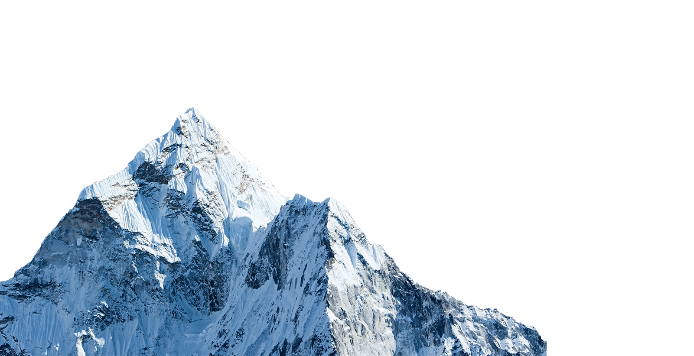
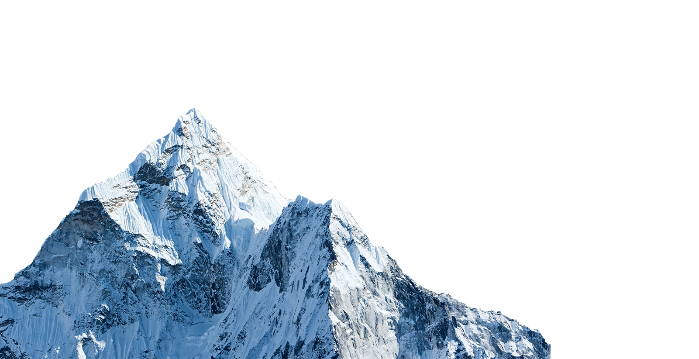
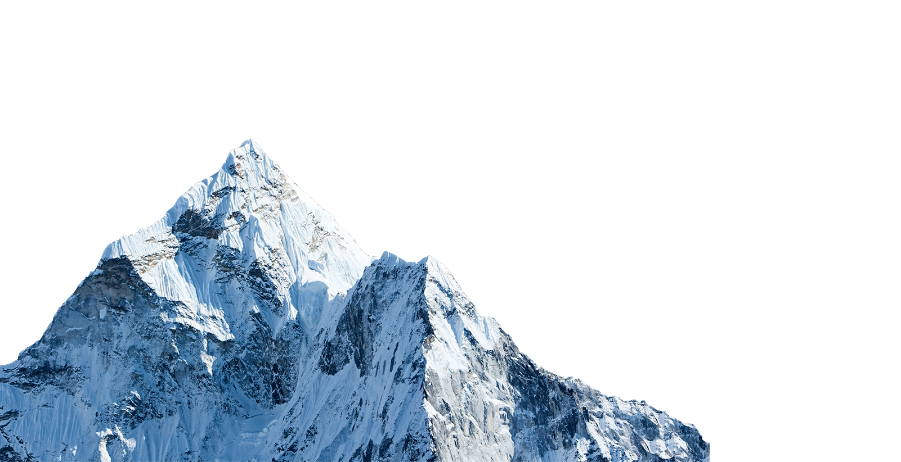
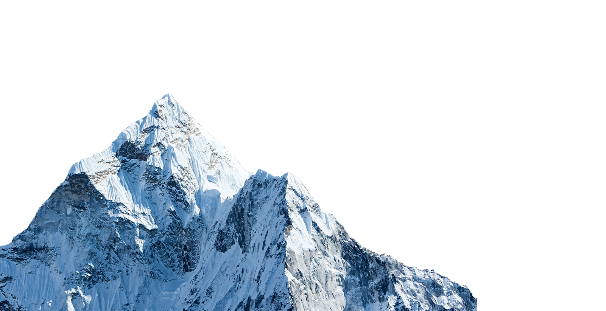

Himalayas, great mountain system of Asia forming a barrier between the Plateau of Tibet to the north and the alluvial plains of the Indian subcontinent to the south. The Himalayas include the highest mountains in the world, with more than 110 peaks rising to elevations of 24,000 feet (7,300 metres) or more above sea level. One of those peaks is Mount Everest (Tibetan: Chomolungma; Chinese: Qomolangma Feng; Nepali: Sagarmatha), the world’s highest, with an elevation of 29,032 feet (8,849 metres; see Researcher’s Note: Height of Mount Everest. The mountains’ high peaks rise into the zone of perpetual snow. North Face of Mount Everest, above the Tibet Autonomous Region of China. For thousands of years the Himalayas have held a profound significance for the peoples of South Asia, as their literature, mythologies, and religions reflect. Since ancient times the vast glaciated heights have attracted the attention of the pilgrim mountaineers of India, who coined the Sanskrit name Himalaya—from hima (“snow”) and alaya (“abode”)—for that great mountain system. In contemporary times the Himalayas have offered the greatest attraction and the greatest challenge to mountaineers throughout the world.